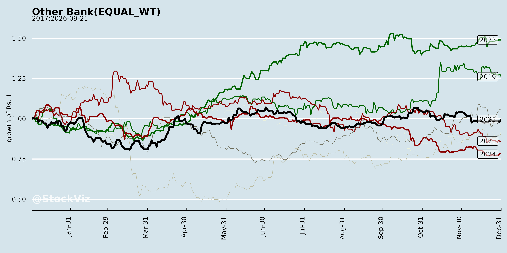
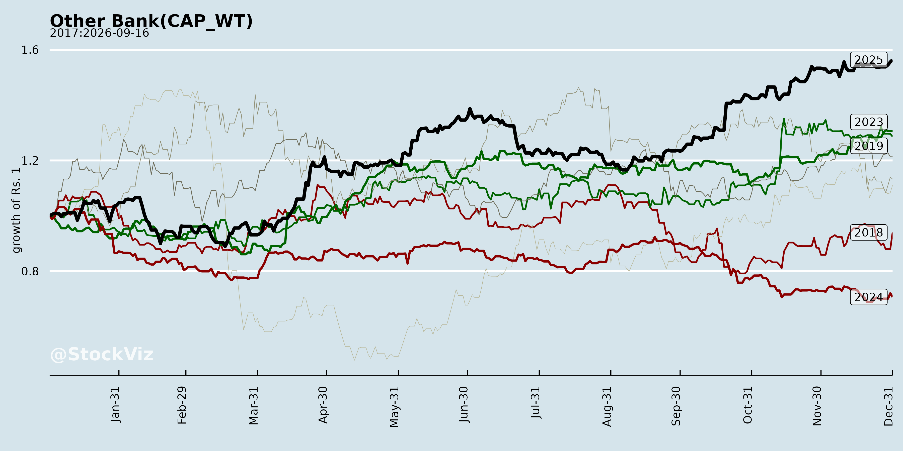
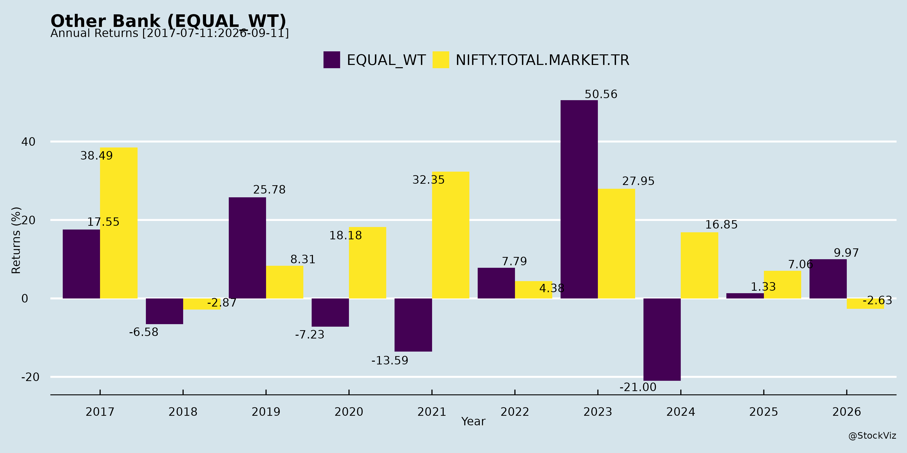
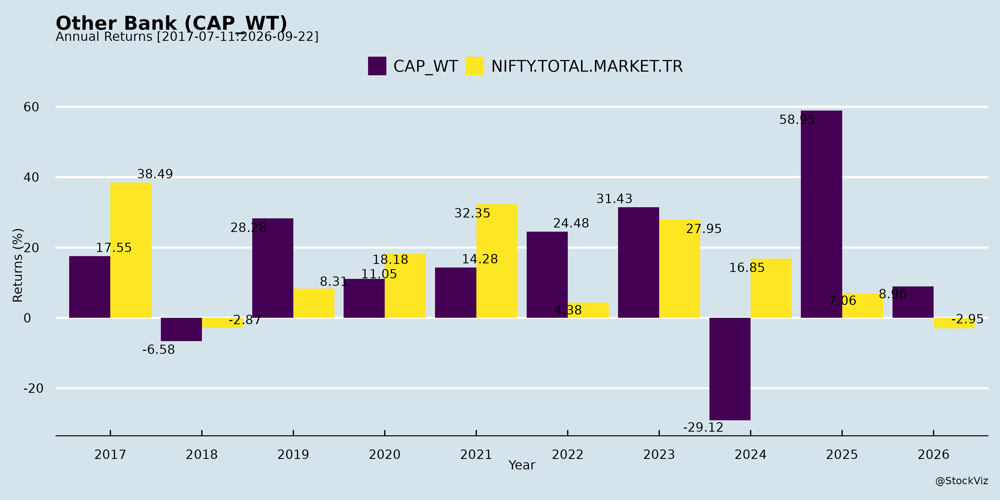
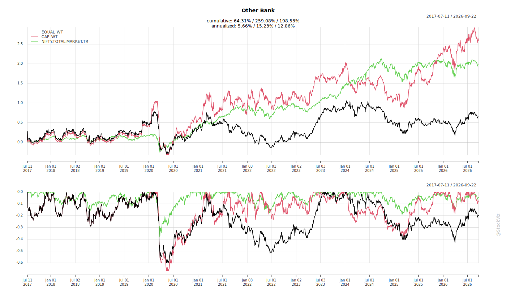
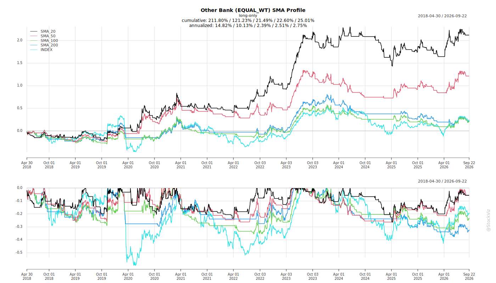
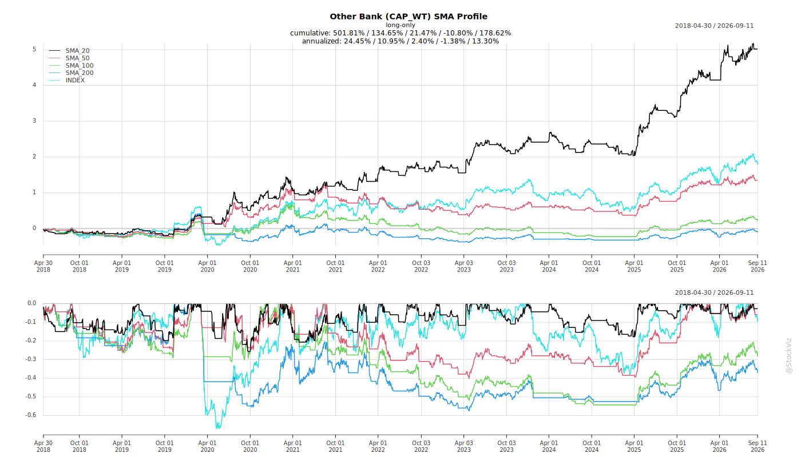

Other Bank
Industry Metrics
December 2, 2025
Annual Returns




Cumulative Returns and Drawdowns

SMA Scenarios


Current Distance from SMA
Rolling Returns


Market Cap
EBIT (% of Industry Total)
Revenue (% of Industry Total)
AI Summaries
Analyst
asof: 2025-11-29
Summary Analysis of Indian Small Finance Banks (SFBs) from Provided Documents
The documents cover announcements and Q2/H1 FY26 earnings transcripts from multiple SFBs (AU, Ujjivan, Equitas, Jana, Utkarsh, Fino Payments, Suryoday, ESAF, Capital SFBs). These reveal a sector navigating MFI stress while pivoting to secured lending. Below is a structured analysis of headwinds, tailwinds, growth prospects, and key risks.
Headwinds (Key Challenges)
- MFI/JLG Portfolio Stress: Widespread contraction (e.g., Utkarsh JLG down 11% QoQ; ESAF micro loans down 33% YoY) due to Guardrail 2.0 (borrower leverage capped at 3 lenders), over-leveraging, and legacy delinquencies. Collections lag (e.g., Utkarsh X-bucket ~98.7%; Suryoday 98.5%), leading to high slippages (Utkarsh ₹464cr Q2; ESAF ₹340cr).
- Asset Quality Deterioration: GNPA elevated (Utkarsh ~high; ESAF 8.5%; Suryoday 5.9%), driving credit costs (Utkarsh peaked, expects moderation; Suryoday targeting <2%). Net losses in some (Utkarsh ₹348cr Q2 loss).
- NIM/Profitability Pressure: Yield compression from mix shift to lower-yield secured loans; deposit cost stickiness despite repo cuts (ESAF CoF 7.2%; Suryoday 7.8%). Opex high (Suryoday 72.9% cost-income).
- Operational Hurdles: Employee attrition (Utkarsh), hiring challenges in MFI, regional stress (e.g., Bihar/UP for Utkarsh; Karnataka/TN for others).
Tailwinds (Positive Factors)
- Secured Lending Momentum: Rapid diversification (Utkarsh secured 47% from 38%; ESAF 61% from 39%; Suryoday mortgage/CV up 39-49% YoY). Gold loans/MSME/housing shine (ESAF gold doubled YoY; Utkarsh MSME +33%).
- Deposit Franchise Strength: Retail deposits granular/sticky (ESAF 96% retail; Suryoday 86%; Utkarsh CASA +17% YoY). Digital sourcing aids low-cost growth (Suryoday ₹1,300cr digital deposits).
- De-Risking Tools: CGFMU/CGTMSE coverage (Utkarsh incremental JLG covered; Suryoday ₹313cr claim received). Improving new-book quality (ESAF new MFI NPA ~2%).
- Macro Support: Favorable monsoon, repo cuts (100bps), govt schemes (e.g., Bihar ₹10k women aid neutral-positive).
Growth Prospects
- Balanced Expansion: Loan book targets 20-30% FY26/FY27 (Utkarsh 25%; ESAF 20-25%; Suryoday 30%). Secured share to 50-70% (ESAF/Micro LAP focus; Utkarsh >50%). Disbursements rebounding (ESAF +119% YoY).
- Yield/NIM Recovery: NIM stabilization at 8-8.5% (Utkarsh); yields improving in secured (Utkarsh MSME +100bps). ROA/ROE glide path: Positive quarterly ROA FY26 (ESAF Q3/Q4); 1.2-2% ROA, 15-20% ROE by FY27-28 (Utkarsh/Suryoday).
- Product/Digital Upside: Cross-sell (MSME/housing), UPI credit (Suryoday 50k customers), digital MSME/secured cards. Branch consolidation + agent models for efficiency.
- Sector Tailwinds: SFBs poised for underserved/rural growth amid India’s $5tn economy push.
Key Risks
- Persistent MFI Legacy: High PCR needs (Utkarsh 68%; ESAF 74%), write-offs (Utkarsh ₹366cr H1), potential ARC sales. Lender+3/4 exposure stressed (Utkarsh 16%/6%).
- Credit Cost Volatility: Elevated near-term (Utkarsh Q3 elevated); dependent on recoveries (20-40% from write-offs).
- Concentration/Geo Risks: MFI heavy in Bihar/UP/Karnataka/TN; NBFC slippages (ESAF ₹40cr).
- Execution Risks: Hiring/attrition in collections; deposit competition; NIM drag from mix shift/repo cuts.
- Regulatory: ECL framework, guardrail impacts; capital needs (rights issues like Utkarsh ₹950cr).
Overall Outlook: FY26 is transitional/consolidation year with MFI bottoming out (green shoots in collections/new book). H2 FY26+ shows recovery via secured pivot, de-risking, and efficiency gains. Resilient deposits/digital offset stress; long-term 20-25% growth sustainable with ROE 15%+ by FY28, but near-term profitability volatile.
General
asof: 2025-11-29
Analysis of Indian Small Finance Banks (SFBs) Sector (Excluding Focus Bank, Based on Peer Disclosures)
The provided documents from peers like AU SFB, Ujjivan SFB, Equitas SFB, Jana SFB, Utkarsh SFB, Suryoday SFB, ESAF SFB, Capital SFB, and Fino Payments Bank (a payments bank) offer insights into the SFB sector’s operational updates, regulatory filings, financial highlights, rights issues, and promoter restructuring. Below is a summary analysis of headwinds, tailwinds, growth prospects, and key risks as of late 2025 (primarily Q2FY26 and FY25 data). This reflects sector-wide trends amid microfinance stress, regulatory tightening, and diversification efforts.
Headwinds (Key Challenges)
- Asset Quality Deterioration: High NPAs across peers (e.g., Utkarsh: Gross NPA 11.42% in Q1FY26 from 2.78% YoY; Ujjivan: PAR 4.45%). Microfinance upheaval (over-leverage, climate shocks, post-COVID effects) led to provisioning spikes (Utkarsh credit cost 8.49%) and losses (Utkarsh Q1FY26 loss ₹239 Cr).
- Profitability Pressure: Sharp profit declines (Utkarsh PAT ₹24 Cr in FY25 vs. ₹498 Cr prior; Ujjivan stable but high credit costs). NIM compression (Utkarsh 5.93% in Q1FY26) due to rising funding costs.
- Regulatory Constraints: Promoter dilution mandates (Utkarsh rights issue for Tier-1 capital; Jana RBI rejection for universal bank transition; ESAF/Capital schemes for shareholding <5-20%). RBI scrutiny on unsecured loans (>75% in some portfolios).
- Operational Costs: High attrition (Utkarsh ~52%), fraud risks (Utkarsh ₹4 Cr losses), and collections stress in rural areas (Bihar/UP concentration).
Tailwinds (Supportive Factors)
- Deposit Mobilization: Strong growth (Ujjivan: 14.8% YoY to ₹39,101 Cr; sector CASA ~25-28%). Retail focus (Utkarsh retail term deposits ~54%) reduces funding costs.
- Diversification: Shift to secured/NMBL loans (Utkarsh: 52.77% of GLP in Q1FY26 vs. 35% prior; Ujjivan secured book 47%). Products like housing (51% YoY growth), MSME, gold loans gaining traction.
- Digital/Branch Expansion: Tech upgrades (Utkarsh Finacle core banking; Ujjivan disbursements +48% YoY). Network growth (Utkarsh 1,099 outlets).
- Capital Adequacy: Above regulatory norms (Utkarsh CRAR 19.64%; Ujjivan ~stable), aided by rights issues.
Growth Prospects
- Portfolio Expansion: GLP growth (Ujjivan 14% YoY; Utkarsh 7.47% FY25). Secured lending (vehicles, housing, wholesale) offers 10-13% yields; disbursements up 21-48% QoQ.
- Liability Franchise: Deposits +18-23% YoY; CASA/RTD mix improving (Ujjivan CASA 27.6%). Cross-sell via digital (UPI, WhatsApp banking).
- Capital Infusion: Rights issues (Utkarsh ₹949 Cr) for Tier-1 boost; promoter restructurings (ESAF/Capital) unlock value.
- Sector Tailwinds: RBI PSL targets, financial inclusion push. Potential universal bank transitions (post-Jana learnings); ESG focus (Fino ‘Very Good’ rating).
- Outlook: Moderate 10-15% AUM growth FY26, driven by NMBL (40-50% mix), if NPAs stabilize.
Key Risks
| Risk Category | Details | Mitigants |
|---|---|---|
| Credit/Asset Quality | Microfinance stress (JLG over-leverage, regional concentration Bihar/UP ~50% GLP); NPAs 9-11%. | Secured shift, collections tech (EBIX), provisioning (PCR 51-59%). |
| Regulatory | Promoter dilution (15-yr timeline), RBI approvals (Jana rejection); forex/FPI limits. | Rights issues, schemes (ESAF/Capital reclassifications). |
| Liquidity/Funding | Bulk deposits 25-33%; high CoF (8%). | CASA growth, CRAR buffer (19-23%). |
| Operational | High attrition (35-52%), fraud (₹0.5-4 Cr), cyber risks. | Tech upgrades, 24/7 SOC, ISO 27001. |
| Market | Competition (banks/MFIs), interest rate volatility, monsoons affecting rural. | Diversification, rural focus. |
| Execution | Rights issue undersubscription, NCLT delays in schemes. | Promoter renunciations to specifics. |
Overall Sector Summary: SFBs face near-term headwinds from microfinance cleanup (high NPAs/provisions), but tailwinds from deposit growth and secured diversification support 10-15% growth. Risks are elevated (asset quality/regulatory), but capital raises and tech investments position resilient players for recovery. Utkarsh exemplifies stress (losses) but proactive measures (rights issue). Investors should monitor Q3FY26 NPAs and promoter dilutions.
Investor
asof: 2025-11-29
Analysis of Indian Small Finance Banks (SFBs) Sector
Using the provided documents (earnings transcripts, investor meet schedules, and disclosures from AU SFB, Ujjivan SFB, Equitas SFB, Jana SFB, Utkarsh SFB, Fino PB, Suryoday SFB, ESAF SFB, and Capital SFB), I’ve analyzed the collective headwinds, tailwinds, growth prospects, and key risks for the Indian SFB sector as of Q2/H1 FY26 (ended Sep 2025). SFBs are undergoing a strategic pivot from unsecured microfinance/JLG loans toward secured retail/MSME segments amid sector-wide stress. Key insights are synthesized below.
Headwinds
- Microfinance/JLG Stress: MFIN Guardrail 2.0 (effective Apr 2025, limiting borrowers to 3 lenders) has caused disbursement slowdowns (e.g., Utkarsh JLG contracted 11% QoQ), elevated slippages (Utkarsh: ₹464cr Q2; Suryoday: ₹170cr Q2 MFI), and collection inefficiencies (98-99% X-bucket but legacy overdue elevated). Regional hotspots: Bihar/UP (Utkarsh), TN/Karnataka (ESAF/Suryoday).
- Asset Quality Deterioration: GNPA rising (Utkarsh ~10% implied; ESAF 8.5%; Suryoday 5.9%), net losses (Utkarsh ₹348cr Q2), high credit costs (Utkarsh 2%+ non-JLG), and interest reversal (₹27cr Q2).
- NIM Compression: Yield dilution from secured shift (ESAF yields down; Suryoday 16.5% effective yield, -320bps YoY) and repo rate cuts impacting floating loans.
- Opex Pressures: High cost-income ratios (Suryoday 72.9%; ESAF targeting 60-65%), employee attrition (industry-wide, Utkarsh stabilizing), and hiring challenges in microfinance.
- Portfolio Contraction: Overall gross advances flat/declining YoY in stressed segments (Utkarsh -2.3% YoY).
Tailwinds
- Secured Lending Momentum: Rapid diversification (ESAF 61% secured from 39%; Utkarsh 47%; Suryoday mortgage/CV +39-49% YoY), driven by gold loans (ESAF doubled YoY), MSME/LAP (Utkarsh +33%), housing/vehicles. Yields improving (Utkarsh MSME 13.4%; ESAF gold incremental 15%).
- Deposit Granularity: Strong retail deposit growth (ESAF +11% YoY, 96% retail; Suryoday +35.5% YoY, CASA 20.7%), falling CoF (ESAF 7.2%; Suryoday 7.8%), CD ratios improving (Utkarsh 79%).
- Risk Mitigants: CGFMU/CGTMSE coverage (Utkarsh incremental JLG/MBBL; Suryoday ₹313cr claim received), high PCR (ESAF 74.4%; Suryoday ~68% MFI).
- Digital/Operational Efficiency: Digital sourcing (Suryoday ₹1,300cr deposits, UPI credit), branch consolidation (Utkarsh 1,100 branches), collections ramp-up (Utkarsh 1,200 workforce).
- Macro Support: RBI repo stability (5.5%), GDP upgrade to 6.8%, favorable monsoons aiding rural demand.
Growth Prospects
- Loan Book Expansion: 20-35% YoY targeted (Utkarsh 25%; ESAF/Suryoday 30%; blended secured 30-35% vs. unsecured 15%). Disbursements rebounding (ESAF +119% YoY; Suryoday Vikas loans +111%).
- Portfolio Mix Evolution: Secured share to 50-70% by FY27 (Utkarsh >50%; ESAF 65%; Suryoday 55%). Focus: Gold/MSME/housing/vehicles (Utkarsh MSME ₹4,164cr +33%).
- Profitability Trajectory: ROA 1.2-2% FY26+ (Suryoday 1.2%; ESAF positive quarterly Q3/Q4), ROE 15-20% by FY28 (Utkarsh); NIM stabilization ~8-8.5%. Credit costs to 2-4% steady-state.
- Liability Side: CASA to 25-30% (ESAF 26.4%), retail deposits >90%, digital channels (Paytm UPI at Suryoday).
- Long-Term: 25%+ AUM CAGR to FY28, equity raises (Utkarsh ₹950cr rights issue), tech transformation (Utkarsh 2.0).
| Bank | Advances YoY | Secured % | GNPA | Target Growth |
|---|---|---|---|---|
| Utkarsh | -2.3% | 47% | Elevated | 25% FY26+ |
| Suryoday | +18.9% | 55% | 5.9% | 30% |
| ESAF | +4% | 61% | 8.5% | 20-25% |
| Sector Avg. | 5-20% | 50-60% | 5-9% | 25%+ |
Key Risks
- Legacy Microfinance NPAs: Peak stress not fully resolved (Utkarsh fresh slippages down but legacy provisions elevated); SMA build-up (Utkarsh 4.8%).
- Geographic/Product Concentration: High exposure to stressed states (Bihar/UP/TN/Karnataka); JLG still 30-40% mix.
- Execution Risks: Hiring/attrition in collections (Utkarsh Q1 high), disbursement ramp-up post-guardrails (2-3 months stabilization).
- Interest Rate/Competitive: Repo cuts eroding yields (floating loans 40-50% portfolio); deposit competition capping CoF decline.
- Regulatory/Capital: ECL framework draft, equity dilution (Suryoday ₹1,000cr enabling), LCR/surplus liquidity drag.
- Macro: Extended monsoons/CV slowdown (Suryoday PAR30+ up), over-leveraged borrowers (16% lender+3 at Utkarsh).
Overall Summary: SFBs face near-term headwinds from microfinance deleveraging but strong tailwinds from secured diversification and guarantees. Growth is poised for 25%+ revival in H2 FY26/FY27 with improving asset quality (GNPA peak), ROA positivity, and NIM stabilization. Risks center on legacy clean-up and execution, but prudent strategies (CGFMU, digital) position the sector for resilient 15-20% ROE by FY28. Investor meets signal confidence amid recovery.
Press Release
asof: 2025-11-29
Summary Analysis of Indian Small Finance Banks (SFBs) Sector
Based on Q2/H1 FY26 Results from AU SFB, Ujjivan SFB, Jana SFB, Utkarsh SFB, Suryoday SFB, ESAF SFB, Capital SFB (and others like Fino Payments Bank, Equitas SFB announcement).
The SFB sector demonstrated resilience amid macroeconomic headwinds, with aggregate deposit growth of ~15-35% YoY across peers (led by granular retail/CASA focus) and a strategic pivot to secured lending (e.g., gold, MSME, housing). However, asset quality stress in unsecured/MFI segments led to elevated provisions, NIM compression, and patchy profitability (PAT growth/mixed losses). AU SFB led with robust metrics (21% deposits YoY, 1.4% RoA), while Utkarsh/ESAF/Suryoday reported losses. Overall, balance sheets expanded ~15-20% YoY, but RoA/RoE moderated to 1-1.4%/7-13%.
Headwinds (Key Challenges)
- Asset Quality Deterioration: GNPA rose sector-wide (AU: 2.41%; Jana: 2.8%; Ujjivan: 2.45%; Suryoday: 5.9%; Utkarsh: 12.4%; ESAF stable at ~3.8% NNPA). Slippages in MFI/credit cards/unsecured loans (AU unsecured de-growth 23%; Jana 7%; Utkarsh JLG contraction). Credit costs elevated (AU: up 29% YoY; Jana: ₹222 Cr accelerated provisions).
- NIM Compression: Loan yields down 19-30 bps (repo repricing, mix shift); CoF mixed (AU down 25 bps QoQ but yields fell). Sector NIM ~5-7% (AU 5.5%; Jana 6.6%; Suryoday down 276 bps YoY).
- Macro/Operating Pressures: Global trade/tariffs, GST cuts delaying spends, repo/CRR cuts slowing transmission. High opex (11-17% YoY rise) from branch expansion/manpower.
- Unsecured Portfolio Stress: De-growth/contraction (AU 17% overall GLP YoY incl. unsecured; Ujjivan micro banking stabilizing but slow).
Tailwinds (Positive Drivers)
- Strong Deposit Mobilization: 15-35% YoY growth (AU: 21%, ₹1.33 Lac Cr; Jana: 31%, >₹30k Cr; Suryoday: 35%; Capital: 20%; ESAF: 6%). CASA up 13-22% (Ujjivan 27.5%; ESAF 26.4%; Capital 33.9%), retail share >80-96%. Stable deposits ~70-79% of book.
- Secured Lending Momentum: Shift reducing risk (Ujjivan: 47% share, 53% YoY; Jana: 73%, 34% YoY; ESAF: 82% disbursements, gold doubled; Capital: mortgage/MSME). CD ratios healthy (81-91%, down QoQ).
- Regulatory/Policy Support: RBI repo/CRR cuts, RWA relief for MSME/housing, ECL staggered, CGTMSE/CGMFU guarantees (Suryoday: ₹378 Cr receivable). AU’s universal bank approval boosts sentiment.
- Operational Scale: Branch/touchpoint additions (AU: 2,626; Ujjivan: 766; Jana: 814). Digital/UPI growth (Fino: 33% YoY UPI txns; partnerships for cards/insurance).
Growth Prospects (Opportunities Ahead)
- Balanced Expansion (15-25% YoY Projected): Deposits to outpace loans (system 2x); secured/MSME/housing to drive 20%+ advances (AU ex-unsecured 22%; Ujjivan 14% GLP). Rural revival via monsoons/GST cuts/capex.
- Profitability Recovery: NIM stabilization (CoF cuts expected); slippages down QoQ (AU 12%; Ujjivan SMA 2%). H1 PAT growth (AU 6%; Capital 5%); RoA/RoE ~1.4%/12-13% sustainable with provisions peaking.
- Franchise Strengthening: Customer base >1-12 Cr (AU 120L+); digital (UPI NRE, WhatsApp); partnerships (Zaggle/SBI Life). Universal bank transitions (AU) and tech (Utkarsh 2.0) for scale.
- Sector Tailwinds: Festive/rural demand, forex/MF distribution for CASA; 20% FY26 advances guidance (Ujjivan).
Key Risks (Potential Threats)
| Risk Category | Details | Mitigants |
|---|---|---|
| Credit/Asset Quality | MFI/unsecured stress (slippages ₹908 Cr AU); GNPA 2-12%; PCR 37-84% (Suryoday low 37%). | Secured shift, CGTMSE, collections >98% bucket-X. |
| Profitability | Provisions up 29-55% YoY; opex rise; treasury volatility (AU ₹221 Cr drop). Losses in Utkarsh/ESAF/Suryoday. | NIM/CoF improvement; PPoP growth (AU 21% H1). |
| Liquidity/Funding | LCR dip (AU 119%); CD 78-91%; borrowings up. | Granular deposits (79% stable); CAR 17-24%. |
| Macro/Regulatory | Rate cuts, ECL norms, DICGC premiums; rural/MFI cycles. | Policy easing (RWA cuts); diversification. |
| Execution | Branch ramp-up costs; competition from universal banks. | Tech/digital focus; governance additions (AU board). |
Overall Outlook: SFBs are in a transition phase—de-risking via secured assets/deposits supports long-term growth (15-20% FY26), but near-term profitability pressured by provisions (credit costs 0.6-2.8%). Strong capital (CAR >20%) and retail franchise provide buffers. Positive macro (consumption revival) could lift RoA to 1.5-2% by FY27, with leaders like AU/Ujjivan outperforming. Monitor MFI recovery and NIM trajectory.
Copyright © 2023 SAS Data Analytics Pvt. Ltd. All rights reserved.